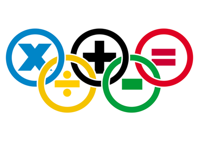
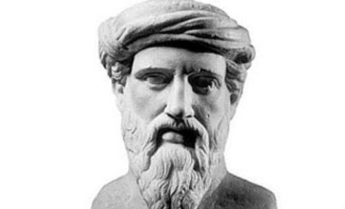

|  |
La matemática es la ciencia deductiva que se dedica al estudio de las propiedades de los entes abstractos y de sus relaciones. Esto quiere decir que las matemáticas trabajan con números, símbolos, figuras geométricas, etc. Mediante la abstracción y el uso de la lógica en el razonamiento, las matemáticas han evolucionado basándose en las cuentas, el cálculo y las mediciones, junto con el estudio sistemático de la forma y el movimiento de los objetos físicos. Las matemáticas, desde sus comienzos, han tenido un fin práctico |
|
El surgimiento de la matemática en la historia humana está estrechamente relacionado con el desarrollo del concepto de número, proceso que ocurrió de manera muy gradual en las comunidades humanas primitivas. Aunque disponían de una cierta capacidad de estimar tamaños y magnitudes, no poseían inicialmente una noción de número. Así, los números más allá de dos o tres, no tenían nombre, de modo que utilizaban alguna expresión equivalente a "muchos" para referirse a un conjunto mayor Antes de la edad moderna y la difusión del conocimiento a lo largo del mundo, los ejemplos escritos de nuevos desarrollos matemáticos salían a la luz solo en unos pocos escenarios. |
 |